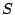
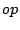

Associativity attributes can be attached to binary functions of the form `  -> ', where is a symbol or empty. Without associativity attributes, nested occurrences of such functions immediately lead to ambiguities, as is shown by the sentence `S-string op S-string op S-string' where `S-string' is a string produced by symbol . The particular associativity associated with determines the intended interpretation of such sentences.
We call two occurrences of functions  and related, when the node
corresponding to
and related, when the node
corresponding to  has a node corresponding to as first or last child.
The associativity attributes define how to accept or reject trees containing
related occurrences of the same function,
has a node corresponding to as first or last child.
The associativity attributes define how to accept or reject trees containing
related occurrences of the same function,  :
:
Currently, there is no syntactic or semantic difference between `left' and `assoc', but we may change the semantics of the `assoc' attribute in the future.
Figure 24 gives Below[]CODE:simple-prio we give an example of a definition of simple arithmetic expressions with the usual priorities and associativities.